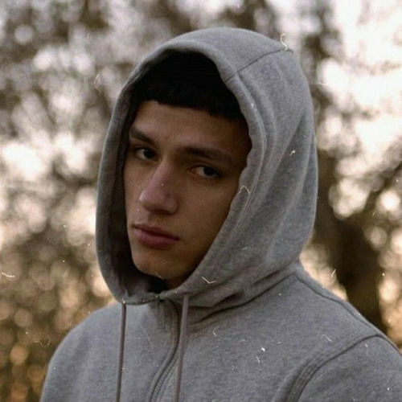

Artista canario referente de la nueva ola de la música urbana en España, conocido por su estilo
versátil que fusiona reggaetón, trap y sonidos electrónicos.
Con éxitos como Esos Ojitos y su proyecto Quién Está Aquí?, se ha consolidado como una de las
voces más prometedoras de la escena actual.
Actuará en el Stage of The Millenium

Artista originario de L'Hospitalet de Llobregat y figura clave del drill y el trap en España,
conocido por su estilo crudo, auténtico y sin filtros.
Con álbumes como 3O y colaboraciones junto a Morad en Capítulo 1, se ha convertido en un
fenómeno de masas acumulando millones de reproducciones.
Actuará en el Urban Block

Rapero y freestyler argentino que lidera la nueva generación del hip hop latino fusionando
sonidos clásicos con ritmos urbanos modernos.
Con discos aclamados como Atrevido, Bien o Mal y éxitos mundiales como Real Gangsta
Love, destaca por un directo cargado de energía.
Actuará en el Sunset